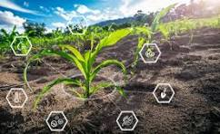

HELLO FARMER!
We are a team dedicated to solving the challenges farmers face while growing crops. Get expert solutions for irrigation, pest control, and fertilizer management to improve your yield and sustainability.

Smart Irrigation
Optimize water usage with intelligent irrigation systems that respond to soil moisture and weather conditions.
Pest Management
Identify and control pests with environmentally friendly solutions that protect your crops and soil.
Fertilizer Optimization
Apply the right nutrients at the right time to maximize crop yield while minimizing environmental impact.